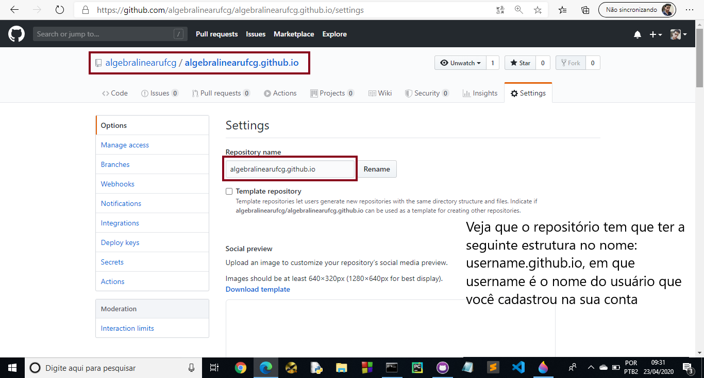
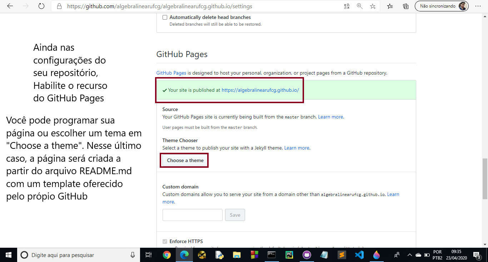
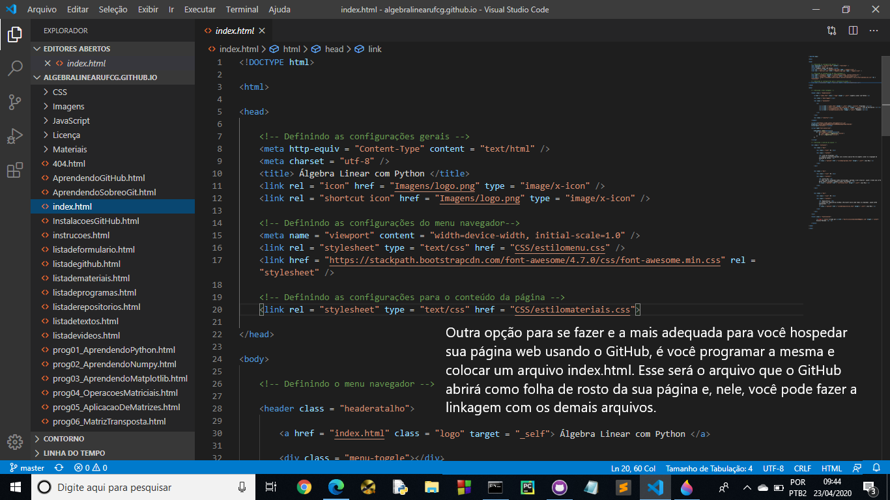
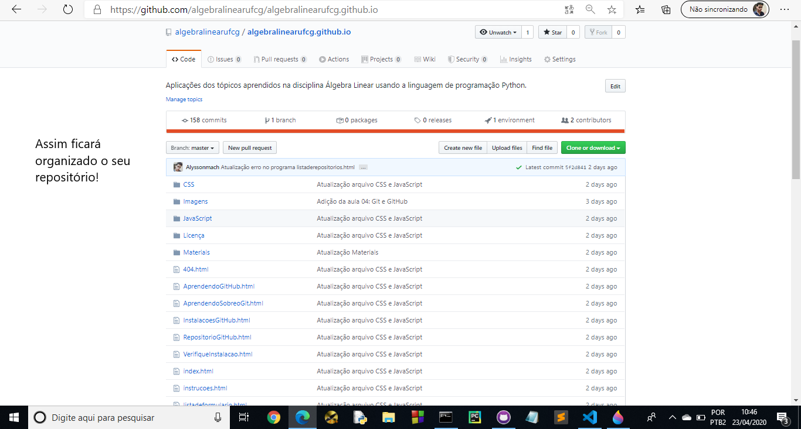
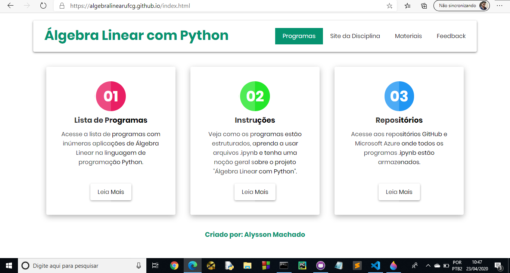
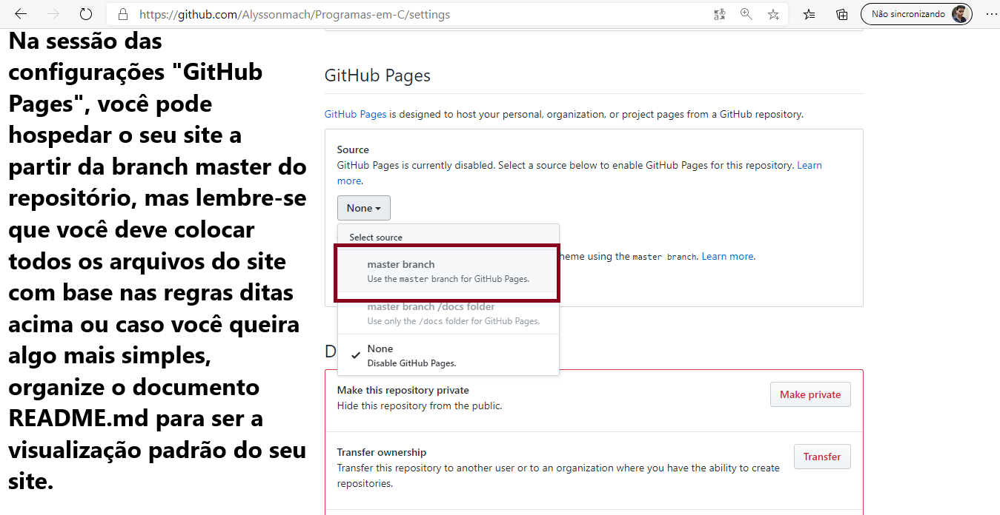
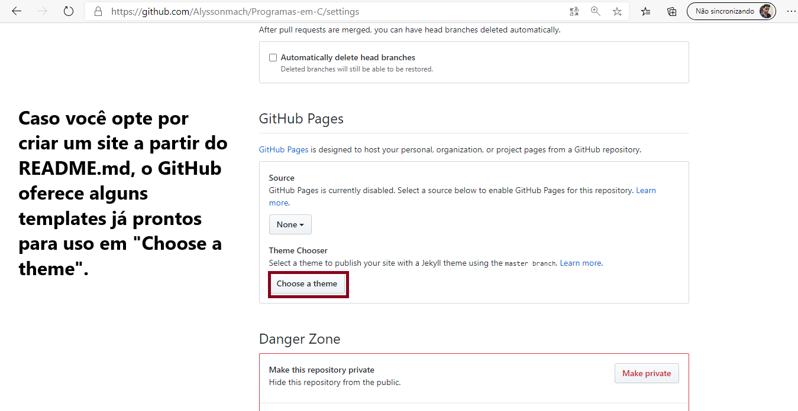

O GitHub Pages é um serviço de hospedagem de sites estáticos. Você pode publicar arquivos HTML, CSS e JavaScript ou usar um gerador de sites estáticos. O GitHub Pages não executa código de servidor, como PHP, nem fornece banco de dados; o endereço publicado pode usar o domínio do GitHub ou um domínio próprio configurado por você.
Antes de começar, revise as aulas sobre Git, GitHub, instalação das ferramentas e criação de repositórios. Isso facilitará o acompanhamento dos próximos passos.
| Partes do Curso Anteriores |
|---|
| Aprendendo Sobre o Git |
| Aprendendo Sobre o GitHub |
| Preparando o Ambiente de Trabalho |
| Repositórios |
Hospedando uma Página Web no GitHub¶
A seguir, vamos publicar um site estático usando o GitHub Pages. As configurações e os nomes dos botões podem mudar conforme a interface do GitHub.
- Para criar um site pessoal de usuário ou organização, o repositório segue o formato usuario.github.io, substituindo “usuario” pelo nome da conta. Sites de projeto podem ser publicados a partir de outros repositórios.

Confira o nome do repositório antes de criá-lo. Para um site pessoal, ele deve seguir o formato usuario.github.io.
- Configure o GitHub Pages na área de configurações do repositório. Se usar um gerador de sites, siga as instruções correspondentes à ferramenta escolhida; os nomes e a localização das opções podem mudar.

Confira se a origem de publicação está configurada corretamente e se os arquivos do site estão nessa origem.
- Se você já tem uma página, envie ao repositório os arquivos estáticos, como HTML, CSS, JavaScript e imagens, e configure a origem de publicação do GitHub Pages. O endereço publicado depende de ser um site pessoal ou de projeto.

Conhecer HTML, CSS e JavaScript ajuda a personalizar um site, mas você também pode usar um gerador de sites estáticos.
- Depois de preparar os arquivos do site, publique-os a partir da origem configurada ou use um fluxo de build compatível. O GitHub Pages hospeda conteúdo estático; ele não executa aplicações de servidor nem fornece banco de dados.

Envie os arquivos do site ao repositório configurado para publicação. O GitHub Pages os disponibilizará em um endereço web; também é possível configurar um domínio próprio.
- Depois que a publicação terminar, abra o endereço indicado nas configurações do GitHub Pages. O formato do endereço varia entre sites pessoais e sites de projeto.

Hospedando Mais de um Site na Mesma Conta¶
É possível publicar mais de um site na mesma conta: por exemplo, um site pessoal e sites associados a projetos. Cada site deve ter sua própria origem de publicação e endereço.

Nas configurações do repositório, escolha a origem de publicação disponível para o site. Ela pode ser uma branch e uma pasta específicas ou um fluxo de trabalho de build, conforme a configuração do projeto.

Se usar um tema ou gerador, siga a documentação da ferramenta para preparar e publicar o site. O README do repositório documenta o projeto, mas não é publicado automaticamente como um site pelo GitHub Pages.
Próximos Passos...¶
Na próxima aula, vamos conhecer outras formas de participar de projetos no GitHub, como abrir issues e propor mudanças.
Está gostando do conteúdo? Compartilhe com seus amigos para que eles possam aprender também! Ajude a tornar a educação gratuita mais plural e democrática.